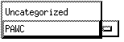
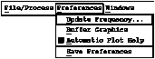
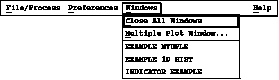

Figure 6. Histo-Scope's Main Window
When you run Histo-Scope or invoke it from a program, the main window pops up. This window allows you to specify how Histo-Scope should access your data and which data items to view. Unless Histo-Scope was invoked from a running program, the Category pull-down menu and the Sub Categories and Histogram/Ntuple/Indicator/Control list boxes are greyed out. This is because you need to tell Histo-Scope to open a file or connect to a running process. (If Histo-Scope was invoked from a running program, the File/Process menu is replaced by a Window menu, and histograms, Ntuples, and other data items in the top-level category are automatically listed.)
Histo-Scope supports the notion of categories, equivalent to HBOOK's directories, for arranging large numbers of histograms and Ntuples in a hierarchy rather than in a single long list. You can navigate through the hierarchy by clicking on items in the "Category" list on the left side of the Histo-Scope window or by using the Category pull-down menu:

Figure 7. Category Pull-Down Menu

Figure 8. File/Process Pull-down Menu
You can use the File/Process pull-down menu in the menu bar to perform the following functions:
(Accelerator Key):
Open Histo-Scope File... (Ctrl O)
Histo-Scope will pop-up a file selection box through which you can specify the filename of the Histo-Scope format file. Then Histo-Scope will read the file and display the items it has read from the file. If you already have a file open or are connected to a process, Histo-Scope will first ask you if you want to close or disconnect before the file selection box appears.
Open HBOOK File... (Ctrl H)
Histo-Scope will pop-up a file selection box through which you can specify the filename of the HBOOK file. Then Histo-Scope will read the file and display the items it has read from the file. If you already have a file open or are connected to a process, Histo-Scope will first ask you if you want to close or disconnect before the file selection box appears.
Connect to Process... (Ctrl N)
Histo-Scope will pop-up a dialog box that lists all processes on the machine Histo-Scope was run from that it can connect to. If desired, a remote node name can be entered and the processes Histo-Scope can connect to on that machine will be listed. Pressing the Connect button or double-clicking on a process requests Histo-Scope to connect to the highlighted or selected process. Once the connection is established, Histo-Scope will display the top-level items and sub-categories of data items that Histo-Scope can access from that process. When selecting Connect to Process, if you already have a file open or are connected to another process, Histo-Scope will first ask you if you want to close or disconnect before it pops up the Connect to Process dialog box.
Re-Read Same File (Ctrl R)
If you currently have a file open, you can select Re-Read Same File to update Histo-Scope with new data that may have been written to the file since Histo-Scope opened it. To ensure that all your plot windows reflect new data, Histo-Scope will close all plot windows (after checking that it's OK to do this) before re-reading the file.
Selecting Close File/Connection allows you to close a file or connection, but leaves all displayed plots available for viewing. If you were connected to a process, no more updating will occur.
Load Configuration (Ctrl L)
Configuration files are files of Histo-Scope commands for opening windows, scaling plots, adjusting plot appearance, setting slider positions, etc. Save Configuration... saves the current appearance of your Histo-Scope session (excluding opening the file or making the connection). Load Configuration re-loads these configuration files. Use Load Configuration after you have opened a data file or connected to a process. More than one configuration file can be loaded in a single session. Loading additional files simply displays the additional plots specified in the new files. Note that configuration files do not specify the file or connection to be opened, nor do they specify Preferences settings. Configuration files are an editable but undocumented ASCII text file format.
Save Configuration (Ctrl S)
Save Configuration saves the current appearanceof your Histo-Scope session (excluding opening the file or making the connection) to a file which can later be loaded with Load Configuration. Histo-Scope will pop up a file selection box through which you can specify the file name of the configuration file. Note that configuration files do not specify the file or connection to be opened, nor do they specify Preferences settings. Configuration files are an editable but undocumented ASCII text file format.
Histo-Scope will exit.
After opening a file or connecting to a process, Histo-Scope will change the title in the title bar from "Histo-Scope" to the filename or process you specified. Also, the histograms, Ntuples, and other data items belonging to the top-level category will be listed. The Category pull-down menu and Sub Categories list box can be used to select sub-categories and navigate through the category (or HBOOK directory) structure for your data. To select a sub-category, click on it and press the Open button, or just double-click on the sub-category.
To view a histogram, Ntuple or other data item, first, select the one or more items that you are interested in. If you have one item to select, simply point to it with the mouse and either click on it once and then press the View button, or just double-click on the item in the list box. If you have more than one item to view, there are a few different ways to select them. If they are contiguous items in the list, you can press the left mouse button and drag the mouse over the items you wish to select, then release the button. A second way to do this same thing would be to point and click on the first item, then move the mouse to the last item you wish to select and point and click on that item while holding down the key. Then you can press the View button. If you want to select items that are not contiguous in the list, select the first item (or group of items) as described above, then move the mouse to the next item and select it by pointing and clicking on that item while holding down the key. Then you can select the View button to display the plots.
If the items selected are all 1D Histograms or groups, you should notice that two additional View buttons will become sensitive to mouse-clicks, the View Overlaid button and the View Multiple button. TheView Overlaid button will cause the plots to be displayed overlaid on each other and the View Multiple button will cause the plots to be displayed in a multiple plot window. If one or more items selected is a 2D Histogram, you can view it in a multiple plot window, but it cannot be overlaid. Therefore, only the View and View Multiple buttons will be sensitive. When viewing a histogram, indicator, control, or trigger a plot window will pop up displaying the item using the default style for that type of data. When requesting an Ntuple, the Ntuple Window will first appear to allow you to specify various kinds of plots and variable assignments.
When the item selected is a group, the View button will display the items in the group according to the group type specified by the user program that created the group (see HS_CREATE_GROUP). Thus plots will be displayed individually, in a multiple-plot window, or in an overlaid plot window, according to this default group type. The View Multiple and View Overlaid buttons override the default behavior.
Once an item is displayed, you can change the presentation style via pop-up menus from the plot or indicator window using the third (right) mouse button (see section Adjusting Plot Settings). The plots can also be rescaled by changing the window size, dragging on the axis tick marks, or typing new endpoint values in the Axis Settings dialog. Two-dimensional histogram and 3D scatter plots also allow rotation of the plot in space. Any number of histograms, Ntuples, plots of Ntuples, or alternate views of histograms and Ntuples can be displayed simultaneously in separate windows, and all plots can be printed. Further details on the capabilities and functions of each data/plot type can be found in subsequent sections of this guide.
Figure 9. Preferences Pull-down Menu
The Preferences pull-down menu in the menu bar allows you to specify:
* how often Histo-Scope should request new data from a connected process,
* to set/unset buffer graphics mode,
* to set/unset whether plot help windows pop up the first time you view that kind of plot, and
* to save your preferences of the above.
Update Frequency...
Update frequency is used only when connected to a running process. The default value is set to three seconds, meaning that every three seconds Histo-Scope will request new data from the connected process. To change the update frequency, use the mouse to drag the slider bar to the value you desire. Increasing this value will save CPU time at the cost of a longer interval between plot updates.
Buffer Graphics
Initially Buffer Graphics mode is off (indicated by the absence of the square toggle button to the left of the words Buffer Graphics. Graphics buffering changes the way Histo-Scope draws moving graphics in X-Windows. Depending on your X-Windows server or X-Terminal, turning on buffered graphics may either improve or degrade animation quality. Whether your hardware will run well with buffer graphics turned on depends on a number of relatively complicated factors. The best way to find out is just to try it. Before you do, however, note that some X-Terminals and PC based X servers may not have enough memory to run properly in buffered graphics mode. When an X server runs out of memory, it will kill the process that made the last memory request, or in some cases, crash itself. Most X-Terminals and PC X servers with limited memory capacity have some kind of memory display that you can invoke to monitor their memory usage. It is advisable to monitor your X server's memory usage the first time you use buffered graphics. The amount of memory that Histo-Scope needs for buffered graphics is dependent on the number and size of plot windows that you have open.
For new users, Histo-Scope will by default pop up a window that explains how to interact with the type of plot just displayed the first time that kind of plot is viewed. Experienced Histo-Scope users will probably want to unset this option and save their preferences.
Save Preferences
Any of the above preferences can be set and then saved to a file which is automatically re-loaded every time Histoscope is started. Selecting Save Preferences generates this file in your home directory (Unix) with the name .histo .

Figure 10. Windows Pull-down Menu
The Windows pull-down menu in the menu bar lists all of the currently displayed plot windows. Selecting one will bring that plot to the front of all other windows. In addition to the list of plot windows, the Windows menu also allows the user to close all plot windows and create a window containing multiple plots:
Close All Windows
Selecting Close All Windows closes all of the open plot windows without closing the currently open file or connection to an attached process.
Multiple Plot Window...
Selecting Multiple Plot Window... will pop up a window which allows the user to select plots to appear together in one larger window. This is helpful for grouping plots together that are related in some way and provides a mechanism that makes all the selected mini-plots visible at the same time.
Histo-Scope also provides a Help menu which gives online help to the user.